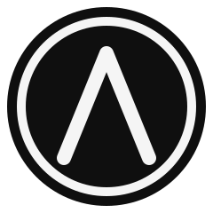
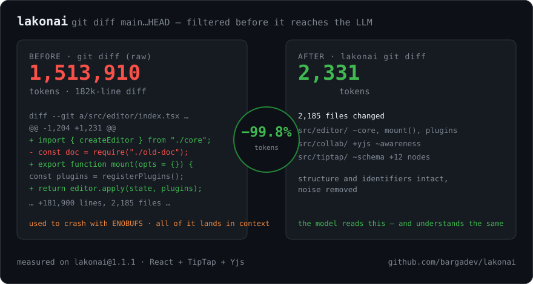

lakonai
Speak less. Ship more.
Your coding agent pays for every byte of tool output it reads. lakonai cuts that before it reaches the context, without dropping an identifier. A 182k-line git diff went 1,513,910 → 2,331 tokens.

Install
npm — every agent
npm install -g lakonai lakonai install
Rule, hooks, compression proxy and MCP catalog compression for Claude Code, Codex, Cursor, Windsurf, Cline and Gemini CLI.
Claude Code plugin — no npm
/plugin install lakonai --marketplace bargadev/lakonai
Hooks, terse rule and /lakonai:* commands. On Claude Code older than 2.1.275: /plugin marketplace add bargadev/lakonai, then /plugin install lakonai@lakonai.
What it does
Filters shell output
30+ commands — git, grep, find, ls, test runners, linters, docker, kubectl, aws. Paths, identifiers and error lines stay verbatim; the noise goes.
Guards file reads
Blocks lockfiles and node_modules, caps huge reads and greps, and can serve a compact AST subgraph instead of a whole source file.
Parks oversized output
A 4k-line build log goes to disk; the agent gets head, tail and exit code, and reads the rest with lakonai peek.
Keeps answers short
A terse-reply rule plus an answer budget restated every turn: summary first, depth when you ask for it.
Learns new commands
Detects heavy commands it has no filter for and enables a safe one automatically.
Shows your numbers
lakonai gain reports what you saved; lakonai gain --share turns it into a card you can post.
Measured, not estimated
An end-to-end test builds a git repository, runs each command raw and through lakonai, and fails CI if a command drops below its floor or loses a line that matters — the newest commit, the changed lines, the build warning.
| Command | Raw | lakonai | Smaller |
|---|---|---|---|
grep -rn transform src | 7,105 | 217 | 96.9% |
git diff HEAD~10 | 10,086 | 1,130 | 88.8% |
git -C <repo> diff HEAD~10 | 10,086 | 1,130 | 88.8% |
git log | 2,239 | 299 | 86.6% |
cd <repo> && git log (via hook) | 2,239 | 299 | 86.6% |
ls -la src/api | 180 | 36 | 80% |
git status | 177 | 113 | 36.2% |
find . -type f | 419 | 287 | 31.5% |
make | 969 | 824 | 15% |
sed -n '1,60p' file | 300 | 300 | 0% |
| Total (tokens) | 33,800 | 4,635 | 86.3% |
File reads are content the agent asked for, so they stay untouched. Full method: docs/benchmark-e2e.md.
Works with
Zero dependencies. MIT licensed. Node 18+.